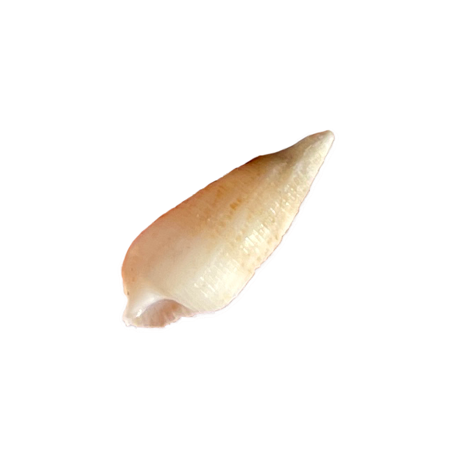
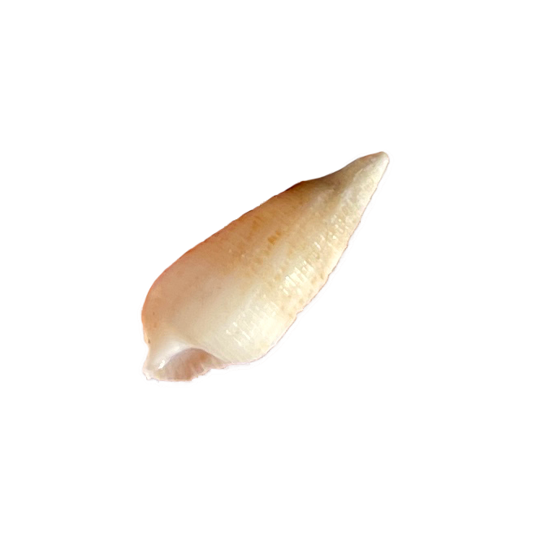

Audio caption: "Fluffy as cotton candy yet formidable as an incoming army, clouds march in with the wind. When taking sunset pics however, a cloudy day is not your enemy. Captured on the clouds are the pinks of flamingoes, the orange from a ripe tangerine, and cool blues of a refreshing pool in the summer."
Story of a Sunny Sunset
Audio caption: "This photo was taken during the time that my dad and I went to the beach about 5 years ago. This was in 2021, a bit after COVID, so we didn’t go out much. However, I asked my dad if I could learn to take pictures and since he’s a professional Hawai’i wedding photographer, he took me to one of his spots and set up my camera for me. We took turns shooting, so I’m not too sure who took this pic. He will probably say that he did, but there’s no way to prove it. The horizon isn’t perfectly straight, so I might’ve taken the picture, actually."
Stay Wary of the Waves
Audio caption: "'Never turn your back on the ocean' is a famous saying amongst the locals here. We were always taught to be aware of the waves since it is Hawaiian culture to respect the ocean's power and to be sage and cautious to avoid being swept away."
A Rockstar's Rocky Ridges
Audio caption: "This beach is fairly known amongst Hawai'i photographers and it turns out that Justin Bieber had posted a picture at a similar looking beach jumping over tide pools on the same day as my dad and I were there. We also happened to take the same photo."
Background Image Description
Audio caption: *Waves sounds play gently in the background.* "The sun sets on the rocky tide pools of Ko'olina Beach Park setting clouds ablaze with hues of pink and orange."

![This photo was taken during the time that my dad and I went to the beach about 3 years ago. This was in 2021, a bit after COVID, so we didn't go out much. However, I asked my dad if I could learn to take pictures and since he's a professional Hawai'i wedding photographer, he took me to one of his spots and set up my camera for me. We took turns shooting, so I'm not sure who took this pic. He will probably say that he did, but there's no way to prove it. The horizon isn't perfectly straight, so I might've taken the picture, actually.](imgs/sunset-sun2.png)


 
